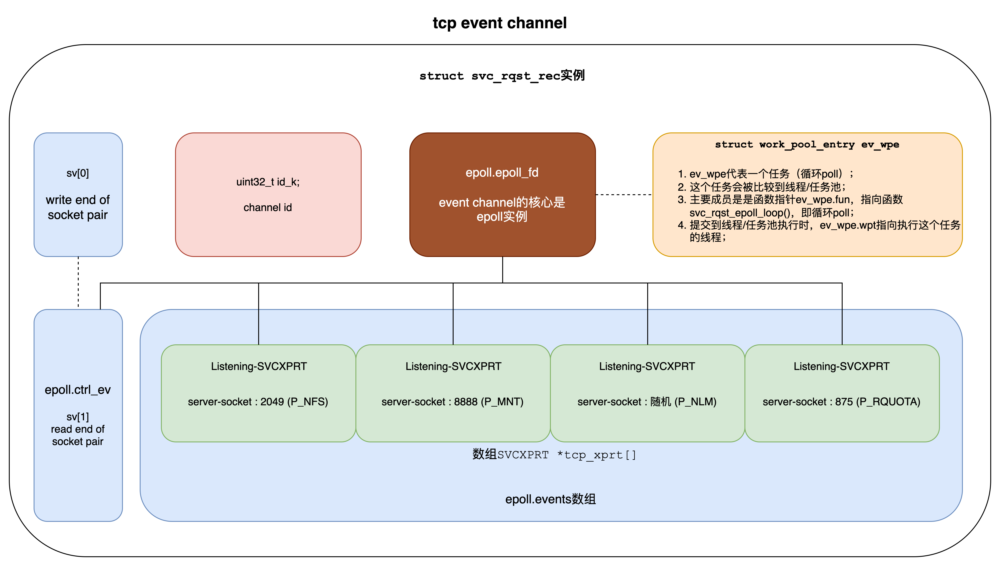
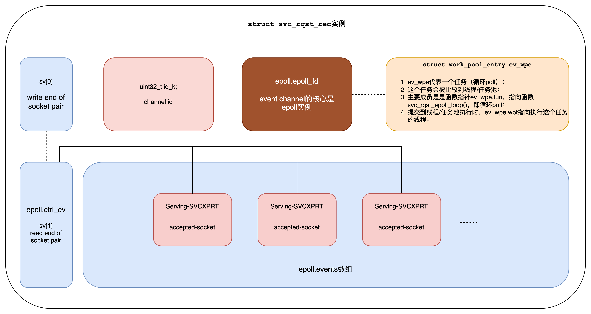
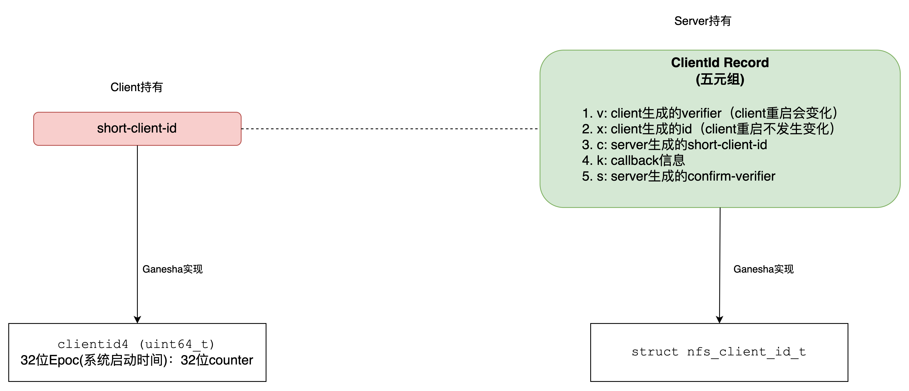
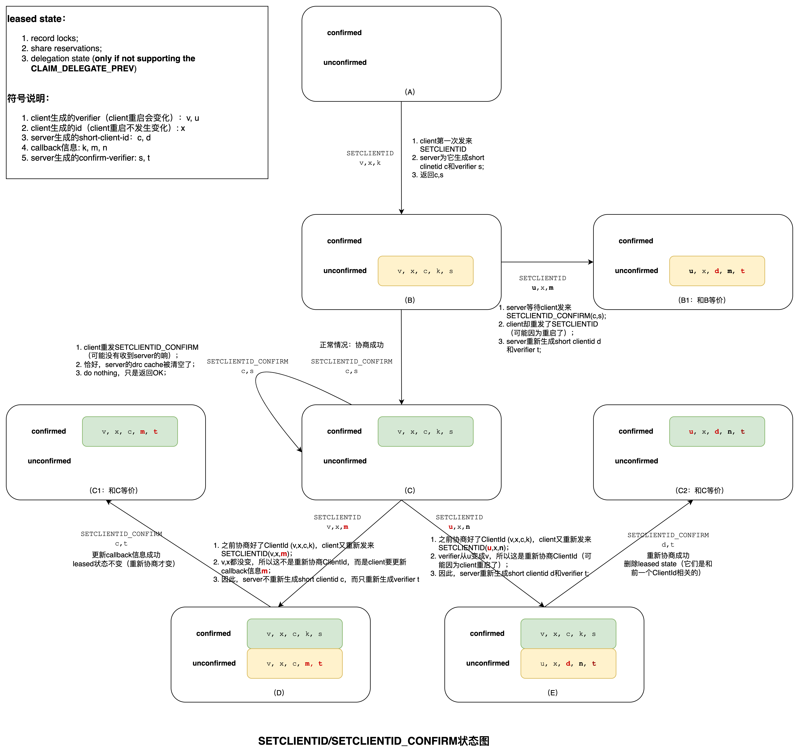
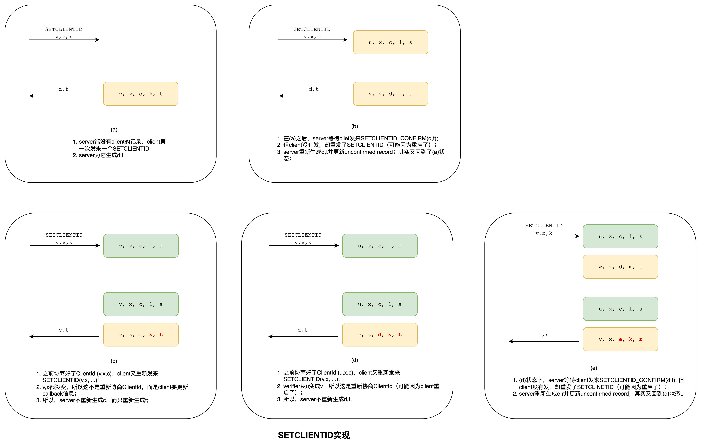
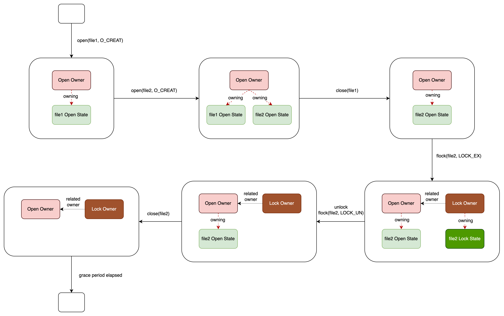
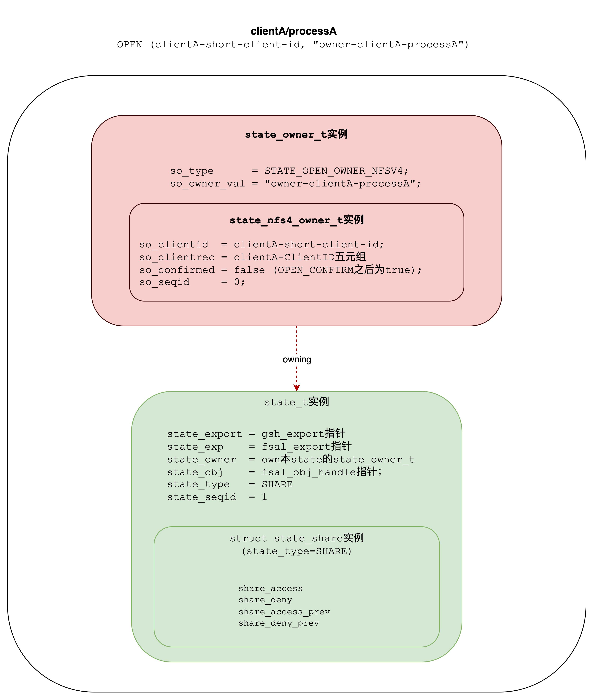

阅读NFS-Ganesha代码(version 2.8.4)，记录要点，方便查阅。
初始化 (1)
流程 (1.1)
nfs_Init_svc() –> svc_rqst_new_evchan():
- 创建epoll (epoll_create);
- 调用epoll_ctl(…, EPOLL_CTL_ADD, …)，为epoll添加一个控制fd (socketpair的一端);
- 调用work_pool_submit()提交一个循环poll任务到线程池。这个任务的entry函数就是svc_rqst_epoll_loop()，也就是循环调用epoll_wait()。所以此时开始，线程池中就有一个线程开始循环epoll_wait。但此时epoll里只有一个控制fd，poll不到什么事件。下面Create_SVCXPRTs()会往epoll里添加fd。
nfs_Init_svc() –> Allocate_sockets():
- 为每个协议(P_NFS, P_MNT, P_NLM, P_RQUOTA, P_NFS_VSOCK, P_NFS_RDMA)创建一个tcp socket和一个udp socket，分别保存在全局数组tcp_socket[]和udp_socket[]中。它们都是server socket (用于listen，不同于accept生成的socket)。
nfs_Init_svc() –> Bind_sockets():
- 为上一步创建的每个server socket(每个协议有tcp和udp两个socket)绑定addr和port(调用bind())；
- 并没有调用listen();
nfs_Init_svc() –> Create_SVCXPRTs():
- 为每个协议(P_NFS, P_MNT, P_NLM, P_RQUOTA, P_NFS_VSOCK, P_NFS_RDMA)的tcp socket和udp socket各创建一个SVCXPRT (struct svc_xprt)对象，分别保存在全局数组tcp_xprt和udp_xprt中。
- SVCXPRT对象的xp_fd=socket fd;
- SVCXPRT对象的xp_type=XPRT_TCP_RENDEZVOUS, xp_ops->xp_recv=svc_vc_rendezvous。RENDEZVOUS表示SVCXPRT对象关联的是server socket。poll server socket若有EPOLLIN事件，就调用xp_ops->xp_recv函数，即svc_vc_rendezvous函数，这个函数调用accept得到一个新的socket fd，这个socket fd代表和client的tcp连接；然后为这个socket fd创建一个新的SVCXPRT对象，调用原SVCXPRT对象的xp_dispatch.rendezvous_cb为新SVCXPRT对象设置xp_dispatch.process_cb，然后把新的socket fd添加到epoll。新创建的SVCXPRT对象的xp_fd=新的socket fd; xp_type=XPRT_TCP; xp_ops->xp_recv=svc_vc_recv。poll这个socket若有EPOLLIN事件，则调用svc_vc_recv函数(调用recv从新的socket fd接收数据，然后回调svc_request)。容易理解：就和socket编程一样，有两类SVCXPRT对象，一类关联的是server socket(用于listen)，另一类关联的是accept产生的socket。见Create_SVCXPRTs() –> Create_tcp() –> svc_vc_ncreatef() –> svc_vc_rendezvous_ops();
- (tcp socket)开始监听(调用listen)；见Create_SVCXPRTs() –> Create_tcp() –> svc_vc_ncreatef();
- 把server socket添加到epoll; 见Create_SVCXPRTs() –> Create_tcp() –> svc_vc_ncreatef() –> svc_rqst_evchan_reg() –> svc_rqst_hook_events() –> epoll_ctl(…, EPOLL_CTL_ADD, …);
- SVCXPRT对象的xp_dispatch.rendezvous_cb = tcp_dispatch[prot]; 对于prot=P_NFS，就是nfs_rpc_dispatch_tcp_NFS函数。

线程/任务池 (1.2)
struct work_pool既是线程池，也是任务池；后面统一叫做“线程/任务池”:- 当
pqh->qcount > 0时：是线程池，这个数表示闲置的线程数； - 当
pqh->qcount < 0时：是任务池，这个数表示堆积的任务数；
- 当
任务：不恰当地，可以比作golang中的goroutine：
- 需要在线程上执行；
- 可以多于线程数（在线程/任务池中等待）；
- 可以长（例如前文所说的循环poll任务），也可以短（处理完一个事件立即退出）；
提交任务到线程/任务池（见
work_pool_submit函数，用goroutine类比，就是go func()）:- 若有闲置线程（
pqh->qcount > 0）：从池中移出一个线程，去执行任务；即：忙碌的线程不在池子中。 - 若没有闲置线程（
pqh->qcount <= 0）：把任务放进池子，等待有闲置线程出现（用goroutine类比的话，即等待被调度）。
- 若有闲置线程（
闲置线程出现（逻辑在
work_pool_thread中）：线程执行完一个任务或者新线程被创建：- 若池子中有等待的任务：移出一个任务给本线程；这样本线程继续忙碌（不进入池子）；
- 若池子中没有等待的任务：1. 本线程放入池子，并timed wait； 2. 醒来时（timeout或者有任务被唤醒）:
- 若有任务（wpt->work不为NULL）：循环继续，处理任务。注意：它已经被任务的submitter移出池子，见
work_pool_submit，所以继续满足：忙碌的线程不在池子中； - 若没有任务：把自己移出池子：可能退出（例如闲置线程太多了），也可能继续存活，继续存活时：又作为一个新出现的闲置线程，重复上面的步骤（没有任务则进入池子）。
- 若有任务（wpt->work不为NULL）：循环继续，处理任务。注意：它已经被任务的submitter移出池子，见
小结 (1.3)
- 结构上还是epoll + socket编程；
- 和两类socket (用于listen的server socket以及accept产生的socket)对应，有两类 SVCXPRT (struct svc_xprt) 对象；
- SVCXPRT(struct svc_xprt)对象是rpc的核心。对于每个协议，有两个SVCXPRT对象，分别关联tcp socket和upd socket:
- xp_fd: 关联的socket；
- xp_type: XPRT_TCP_RENDEZVOUS表示用于listen的server socket；XPRT_TCP表示accept产生的socket；
- xp_ops: 回调函数表。其中xp_recv用于接收incoming requests；
- xp_dispatch: 派发回调函数，派发接收到的incoming requests。以P_NFS协议为例，对于XPRT_TCP_RENDEZVOUS类型的SVCXPRT，xp_dispatch.rendezvous_cb=nfs_rpc_dispatch_tcp_NFS；对于XPRT_TCP类型的SVCXPRT，xp_dispatch.process_cb=nfs_rpc_valid_NFS;
请求处理 (2)
准备工作 (2.1)
- 如第1节所述，初始化时nfs_Init_svc()–>svc_rqst_new_evchan()创建了3个channel，每个channel就是一个epoll实例。
- udp channel (chan_id=4)
- tcp channel (chan_id=3)
- rdma channel 不存在，因为没有定义宏
_USE_NFS_RDMA - 一个client端channel (chan_id=2)：逻辑在函数
clnt_vc_ncreatef中。这里是ganesha server，为什么创建一个client端channel呢？猜测是用于server主动call client的情况，暂不深究，简单看一下clnt_vc_ncreatef:- 使用fd连接raddr：connect(fd, …)
- 创建一个SVCXPRT实例包装fd，其xp_dispatch.process_cb = clnt_vc_process;
- 调用svc_rqst_evchan_reg把SVCXPRT实例添加到channel：此时因为__svc_params->ev_u.evchan.id=0，创建一个新的channel，chan_id=2;
- nfs_Init_svc()–>svc_rqst_new_evchan()调用work_pool_submit()提交循环poll routine（用goroutine的类比去理解），这个routine的entry函数就是svc_rqst_epoll_loop()，也就是循环epoll_wait()。所以有3个routine开始工作，它们就是循环调用epoll_wait()，不过现在还poll不到事件。
- nfs_Init_svc()–>Allocate_sockets()/Bind_sockets()/Create_SVCXPRTs()为每个协议(P_NFS, P_MNT, P_RQUOTA等)创建一个tcp socket和一个udp socket，bind，listen，创建SVCXPRT实例，并分别添加到udp channel (udp epoll)和tcp channel(tcp epoll)中：
- udp channel(epoll实例)管理: P_NFS (udp ip-port 0.0.0.0:2049), P_MNT (udp ip-port 0.0.0.0:8888), P_RQUOTA (udp ip-port 0.0.0.0:875) …
- tcp channel(epoll实例)管理: P_NFS (tcp ip-port 0.0.0.0:2049), P_MNT (tcp ip-port 0.0.0.0:8888), P_RQUOTA (tcp ip-port 0.0.0.0:875) …
- 所以可以粗略的这么对应：
- channel = epoll
- SVCXPRT = socket; 由struct svc_xprt(别名SVCXPRT)表示，其中xp_fd字段就是socket的fd；
- NFSv4只需要P_NFS协议，而且这里我们只考虑tcp情况，所以只需考虑P_NFS(tcp ip-port 0.0.0.0:2049)对应的SVCXPRT实例(为了区分，我们把它叫做Listening-SVCXPRT)：
- xp_fd = listening socket fd;
- xp_type = XPRT_TCP_RENDEZVOUS
- xp_ops->xp_recv = svc_vc_rendezvous函数
- xp_ops->xp_stat = svc_rendezvous_stat函数
- xp_ops->xp_decode = (svc_req_fun_t)abort
- xp_ops->xp_reply = (svc_req_fun_t)abort
- xp_dispatch.rendezvous_cb = nfs_rpc_dispatch_tcp_NFS函数
mount：建连 (2.2)
- client: mount -t nfs -o “vers=4.0,rw” {server-addr}:/export /mnt
- server端tcp channel(epoll实例)poll到事件。前面说过，有3个routine分别负责poll udp, tcp, rdma channel；现在负责tcp channel的routine(entry函数svc_rqst_epoll_loop)poll到事件。
- svc_rqst_epoll_loop()调用svc_rqst_epoll_events()处理事件:
- 若有多个事件，除了第一个，其它的都被
work_pool_submit()提交到线程池，entry函数是svc_rqst_xprt_task，即相当于go svc_rqst_xprt_task()；也就是说，为后N-1个事件启动异步routine（关于任务和routine的类比，见第1.2节）。 - 若只有一个事件：是多个事件的特例，next step；
- 第一个事件被返回前，调用
work_pool_submit()再提交一个循环poll任务到线程池，entry函数是svc_rqst_epoll_loop()，即相当于go svc_rqst_epoll_loop()。为什么再起一个循环poll routine呢？因为之前那个将不再干循环poll的活了，见下一步，偷梁换柱。 - 第一个事件被返回到
svc_rqst_epoll_loop（之前的循环poll routine），在这里直接调用svc_rqst_xprt_task处理它，处理之后就break（循环退出），不再循环poll了。也就是说，之前的循环poll routine poll到N个事件，为后N-1个起了routine异步处理，再起一个新的循环poll routine替代自己（即go svc_rqst_epoll_loop()），而自己去处理第一个事件，处理完之后就退出，这就是偷梁换柱。看起来好麻烦，有啥作用呢？代码注释中说了：use this hot thread for the first event.
- 若有多个事件，除了第一个，其它的都被
- 所以，poll到的事件，无论是第一个还是其他的，最终都由
svc_rqst_xprt_task函数处理，这个函数：- 调用SVCXPRT的xp_ops->xp_recv函数；这里是Listening-SVCXPRT，所以函数是
svc_vc_rendezvous。
- 调用SVCXPRT的xp_ops->xp_recv函数；这里是Listening-SVCXPRT，所以函数是
- svc_vc_rendezvous函数调用accept()：返回一个socket，此socket就是和client的连接。然后，创建一个SVCXPRT(包装accept返回的socket)。为了和Listening-SVCXPRT区分，我们把这个SVCXPRT叫做Serving-SVCXPRT。然后调用
svc_vc_override_ops()来设置Serving-SVCXPRT：- xp_fd = accept返回的socket;
- xp_type = XPRT_TCP
- xp_ops->xp_recv = svc_vc_recv函数
- xp_ops->xp_stat = svc_vc_stat函数
- xp_ops->xp_decode = svc_vc_decode函数
- xp_ops->xp_reply = svc_vc_reply函数
- xp_dispatch.process_cb = nfs_rpc_valid_NFS函数(调用Listening-SVCXPRT的xp_dispatch.rendezvous_cb，设置Serving-SVCXPRT的xp_dispatch.process_cb)；
- svc_vc_rendezvous函数调用svc_rqst_xprt_register(): 把新建的Serving-SVCXPRT加入一个channel中去。
- 要加到哪个channel呢？这里有2种策略：
- affinity: poll到它的那个channel（以tcp channel为例，就是chan_id=3的那个channel）设置了
SVC_RQST_FLAG_CHAN_AFFINITY，就加到此channel中； - round robin（默认）: poll到它的那个channel没有设置
SVC_RQST_FLAG_CHAN_AFFINITYflag，就采用round robin策略。再创建n个channel（因为传入的chan_id=round_robin=0），以后mount创建的Serving-SVCXPRT，都以round robin的方式加到它们中。但这里有2个事情要注意：1. chan_id前面已经使用了4，3，2，所以这里只能再创建1和0两个channel；2. 可能是bug，轮转时，只能选到1，0被advance逻辑跳过去了。所以，现在的实际情况是：所有mount创建的Serving-SVCXPRT，都被加入chan_id=1的channel中。这是细节，不影响正确性。为了方便叫，我们把这n个channel（现在只有chan_id=1的1个）叫做Serving-Chan；
- affinity: poll到它的那个channel（以tcp channel为例，就是chan_id=3的那个channel）设置了
- 加入：svc_rqst_hook_events()–>epoll_ctl(…,EPOLL_CTL_ADD,…)把accept返回的socket添加到Serving-Chan;
- 要加到哪个channel呢？这里有2种策略：
- 至此mount成功，client和server端建立了一个tcp连接；

mount：建连之后的操作 (2.3)
tcp连接建立之后，client立即从新连接发来很多请求。对于NFSv4.0，mount操作就是SETCLIENTID，SETCLIENTID_CONFIRM和PUTROOTFH,GETFH,GETATTR这5个操作。假设mount的export的pseudo path是/foo/bar
- nfs_null: 测试服务端是否可用；
- nfs4_Comp(SETCLIENTID): 协商clientid
- nfs4_Comp(SETCLIENTID_CONFIRM): 协商clientid
- nfs4_Comp(PUTROOTFH,GETFH,GETATTR)；1.PUTROOTFH: 它的副作用是current-fh <- root-fh，也就是把pseudo filesystem的”/“设置为current filehandle；thread local变量
op_ctx->ctx_export指向export-0；2.GETFH: 获取current filehandle，即获取”/“的filehandle；3.GETATTR: 获取current filehandle的attributes，即”/“的attributes。Client与此相关的逻辑在linux内核代码nfs4_xdr_enc_lookup_root函数中； - nfs4_Comp(PUTFH,GETATTR): 1.PUTFH: 客户端传来一个filehandle，让服务端把这个filehandle设置为current filehandle。客户端传来的就是上一步GETFH返回的filehandle，也就是”/“的filehandle。其实上一步已经把它设置为current filehandle了，所以这一步只是重复操作，没有实际的作用。不过PUTFH是幂等的，所以也不会导致错误。2.GETATTR: 获取current filehandle的attributes，即”/“的attributes；因为上一步已经获取了，所以也没有实际的作用。
- nfs4_Comp(PUTFH,GETATTR): 重复操作，没有实际作用；
- nfs4_Comp(PUTFH,GETATTR): 重复操作，没有实际作用；
- nfs4_Comp(PUTFH,GETATTR): 重复操作，没有实际作用；
- nfs4_Comp(PUTFH,GETATTR): 重复操作，没有实际作用；
- nfs4_Comp(PUTFH,GETATTR): 重复操作，没有实际作用；
- nfs4_Comp(PUTFH,ACCESS,GETATTR): 1.PUTFH: 重复操作；2.ACCESS: 检查对current filehandle(即”/“)的访问权限；3.GETATTR: 重复操作；
- nfs4_Comp(PUTFH,LOOKUP,GETFH,GETATTR): 1. PUTFH: 还是重复操作，把”/“设置为current filehandle；2.LOOKUP: 它带有一个filename参数，本例中就是”foo”，也就是在”/“中查找”foo”，并把”/foo”设置为current filehandle(注意，从此current filehandle变了). 由于”/foo”不是一个export，所以thread local变量
op_ctx->ctx_export指向export-0没变；3.GETFH: 返回”/foo”的filehandle。4.GETATTR: 返回”/foo”的attributes; - nfs4_Comp(PUTFH,ACCESS,GETATTR): 1. PUTFH: 客户端传来一个filehandle，让服务端把这个filehandle设置为current filehandle。客户端传来的就是上一步GETFH返回的filehandle，也就是”/foo”的filehandle。所以，这一步也是重复操作，没有实际作用。2.ACCESS: 检查对current filehandle(即”/foo”)的访问权限；3.GETATTR: 返回”/foo”的attributes，上一步已经返回了，所以也是重复。
- nfs4_Comp(PUTFH,LOOKUP,GETFH,GETATTR)：1.PUTFH: 重复操作，还是把”/foo”设置为current filehandle；2.LOOKUP: 在”/foo”中查找”bar”，并把”/foo/bar”设置为current filehandle(注意，current filehandle又变了). 由于”/foo/bar”是一个export，所以thread local变量
op_ctx->ctx_export指向export-{bar的exportId}；这里还会检查export允许的vpc，假如vpc id (vni)不在export的vnis列表，LOOKUP请求会失败，客户端mount会报错: “Operation not permitted”；3.GETFH: 返回”/foo/bar”的filehandle；4.GETATTR: 返回”/foo/bar”的attribute; - 读写操作……
这些请求的具体语义见后面章节，本节梳理它们的流程处理。
server端的循环poll routine(entry函数
svc_rqst_epoll_loop)在Serving-Chan(epoll实例)poll到事件；调用svc_rqst_epoll_events()函数。和2.2节调用
svc_rqst_epoll_events之偷梁换柱逻辑一样：起routine异步处理第一个之后的事件；当前负责poll的routine去处理第一个事件(代码注释说”use this hot thread for the first event”)，即调用svc_rqst_xprt_task：- 调用SVCXPRT的xp_ops->xp_recv函数，这里是Serving-SVCXPRT，所以调用对应的
svc_vc_recv函数。
- 调用SVCXPRT的xp_ops->xp_recv函数，这里是Serving-SVCXPRT，所以调用对应的
svc_vc_recv:
- 调用recv函数从网络接收数据：分为多个fragment；一个fragment也可能recv多次（多次调用svc_vc_recv）;
- 若一次接收不完，还有数据要接收，则return SVC_STAT()；即调用Serving-SVCXPRT的xp_ops->xp_stat(svc_vc_stat函数)并返回；
- 下一次继续recv，若完成，则调用svc_request()函数。
svc_request：
- 分配一个struct svc_req对象(以及外部的container对象nfs_request_t)，进而调用Serving-SVCXPRT的xp_ops->xp_decode(svc_vc_decode函数)。接收完整的请求之后，自然要decode。
svc_vc_decode：
- 把解码得到的信息保存到struct svc_req对象的rq_msg字段。
- 然后调用Serving-SVCXPRT的xp_dispatch.process_cb(即nfs_rpc_valid_NFS函数);
nfs_rpc_valid_NFS（自此进入nfs_worker_thread.c文件）:
- 获取struct svc_req对象的外部container对象nfs_request_t reqdata; 它是上一步中svc_request()函数分配的。
- NFSv4的cb_prog(rpc program number)是100003(NFS4_PROGRAM); cb_vers(版本)是4(NFS_V4); cb_proc(function)有两个: 0=NFSPROC4_NULL, 1=NFSPROC4_COMPOUND
- 根据cb_proc查nfs4_func_desc表，得到reqdata->funcdesc：若cb_proc=NFSPROC4_NULL则得到{funcname=”nfs_null”, service_function=nfs_null, dispatch_behaviour = NOTHING_SPECIAL}；若cb_proc=NFSPROC4_COMPOUND则得到{funcname = “nfs4_Comp”, service_function=nfs4_Compound, dispatch_behaviour = CAN_BE_DUP}。nfs_null是空操作。一个操作之前，client会调用nfs_null来测试服务端是否可用。
- 调用nfs_rpc_process_request(reqdata);
nfs_rpc_process_request(reqdata):
- auth检查;
- acess检查；
- 获取vtoa信息；
- 分配（或者从cache获取）请求的响应对象(nfs_res_t实例):
- 若当前请求cacheable：从cache获取nfs_res_t实例（hit）或者创建nfs_res_t实例（miss），指针赋值给reqdata->res_nfs;
- 若当前请求not cacheable：创建nfs_res_t对象，指针赋值给reqdata->res_nfs;
- 若是cacheable请求且hit，则直接send reply;
- 否则，调用reqdesc->service_function来处理请求；对于NFSv4这个callback是：
- nfs_null
- nfs4_Compound
所以调用nfs4_Compound:
- 从arg获取到argarray和argarray_len，它们是compound请求内所包含的op数组及数组长度；
- 获取nfs_request_t reqdata。它是前面svc_request()函数创建的。
- 分配代表response的结构体：struct COMPOUND4res res_compound4；前面说的响应对象(nfs_res_t实例)，是这个结构体的外壳；
- for each op in argarray: process_one_op(data, &status);
process_one_op(data, status): status是output参数；
- 找到待处理的op：
nfs_argop4 thisarg; (data->oppos是待处理的op的index) - 找到待处理的op对应的response：
nfs_resop4 thisres; - 当前op的opcode就是SETCLIENTID(35), SETCLIENTID_CONFIRM(36), PUTROOTFH(24), GETFH(10), GETATTR(9), ACCESS(3), LOOKUP(15), …; 它对应的处理函数在全局数组optabv4中，可以使用opcode查找。
- 调用根据opcode查找到的处理函数，例如ACCESS是函数
nfs4_op_access; LOOKUP是函数nfs4_op_lookup; PUTFH是nfs4_op_putfh;
- 找到待处理的op：
NFSv4.0 Operations (3)
SETCLIENTID和SETCLIENTID_CONFIRM (3.1)
ClientId是客户端在服务端的身份。这个身份有点类似于会话session（可能不恰当），因为：
- Client端重启了，ClientId需要重新协商；
- Server端重启了，就不认识之前的ClientId，也需要重新协商；
- 并且，重新协商ClientId的时候，之前的ClientId所获取的leased state都要立即释放。leased state包括：
- locks;
- share reservations;
- delegations (only when CLAIM_DELEGATE_PREV NOT supported);
所以，一次ClientId的协商有点类似于建立一个session；
另外，协商ClientId的时候，顺便还携带了Server callback Client时使用的一些信息；可以认为这些callback信息是session的属性。可以在ClientId不变（session不变）的情况下，修改callback信息（修改session的属性）。所以，SETCLIENTID和SETCLIENTID_CONFIRM有两种使用情况：
- 协商ClientId;
- 修改callback信息（ClientId不变）；
不考虑附带的callback信息，ClientId包含两个部分：
- verifier: 重新协商时变化；由client端选取，client端要保证重启时一定变化；
- id: 重启（所以重新协商）时不变；也由client端选取，client端要保证重启时一定不变；
Linux NFSv4.0 {server端ipaddr}/{client端ipaddr tcp}是一个例子，这个串即使client端重启了，也不变。
所以，从总体上看ClientId是每次协商都变化。Client端发给server一个ClientId，server发现id对应的verifier变了，就知道client端重启了，正在和server重新协商ClientId。
ClientId的协商过程如下：
- client发给server SETCLIENTID(client生成的verifier, client生成的id, callback信息);
- server创建一个unconfirmed记录 {client生成的verifier, client生成的id, short-client-id, callback信息, confirm-verifier}，并返回response(short-client-id, confirm-verifier)；其中short-client-id和confirm-verifier是server生成的；
- client发给server SETCLIENTID_CONFIRM(short-client-id, confirm-verifier);
- server把unconfirmed记录变成confirmed记录;
所以，这里有2条记录：
- confirmed;
- unconfirmed;
记录中有5条重要信息：
- v: client生成的verifier（client重启会变化）
- x: client生成的id（client重启不发生变化）
- c: server生成的short-client-id; ganesha的实现是：
Epoc(32bit:服务器重启时间)<<32 | 32bit:累加计数器 - k: callback信息
- s: server生成的confirm-verifier
注意：short-client-id是这个记录nfs_client_id_t的压缩形式；server端负责short-client-id和记录的一一对应关系；client端使用short-client-id和server交互。

Ganesha实现中:
- short-client-id的类型是
clientid4; - 这5条信息构成的记录
struct nfs_client_id_t;
下图描述了：1. 协商ClientId；2. 重新协商ClientId；3. 修改callback信息（ClientId不变）:

NFSv4.0协议描述的SETCLIENTID实现细节如下：

OPEN/CLOSE与LOCK/LOCKU (3.2)
Open-Owner/Open-State与Lock-Owner/Lock-State (3.2.1)
NFSv4和NFSv3相比，最大的区别是前者是有状态的，即server端维护一些state，例如打开的文件，文件锁。

用放大镜看一个Open-Owner/Open-State:

createmode (3.2.2)
NFS4.0协议原文:
UNCHECKED
- UNCHECKED means that the file should be created if a file of that name does not exist and encountering an existing regular file of that name is not an error. For this type of create, createattrs specifies the initial set of attributes for the file. When an UNCHECKED create encounters an existing file, the attributes specified by createattrs are not used, except that when an size of zero is specified, the existing file is truncated.
- 文件存在：请求成功，不报错。如果请求中带有filesize=0属性，则truncate文件；否则，请求中没带filesize=0属性，do nothing;
- 文件不存在：创建文件；初始属性 <- 请求中的createattrs;
EXCLUSIVE
- EXCLUSIVE specifies that the server is to follow exclusive creation semantics, using the verifier to ensure exclusive creation of the target. The server should check for the presence of a duplicate object by name. If the object does not exist, the server creates the object and stores the verifier with the object. If the object does exist and the stored verifier matches the client provided verifier, the server uses the existing object as the newly created object. If the stored verifier does not match, then an error of NFS4ERR_EXIST is returned.
- If they (client provided verifier and stored verifier) match, the server treats the request as a success. The request is presumed to be a duplicate of an earlier, successful request for which the reply was lost and that the server duplicate request cache mechanism did not detect.
- 通过verifier识别重传；识别到重传时，返回成功；
GUARDED
- If GUARDED is specified, the server checks for the presence of a duplicate object by name before performing the create. If a duplicate exists, an error of NFS4ERR_EXIST is returned as the status.
- Use of the GUARDED attribute does not provide exactly-once semantics. In particular, if a reply is lost and the server does not detect the retransmission of the request, the operation can fail with NFS4ERR_EXIST, even though the create was performed successfully.
- The client would use this behavior in the case that the application has not requested an exclusive create but has asked to have the file truncated when the file is opened. In the case of the client timing out and retransmitting the create request, the client can use GUARDED to prevent against a sequence like: create, write, create (retransmitted) from occurring.
总结来说：
- UNCHECKED: 没有保护；
- EXCLUSIVE:
- 等价于posix的
open(O_CREAT|O_EXCL, ...)，返回成功和创建新文件两者互为充要条件；若响应丢失然后请求重传，server会识别这种情况，并返回成功。 - 待验证：client端在nfs目录里调用
open(O_CREAT|O_EXCL, ...)，client内核的就EXCLUSIVE create?
- 等价于posix的
- GUARDED:
- 不能提供exclusive的语义。比如响应丢失然后请求重传，server会返回NFS4ERR_EXIST，却创建了文件。
- GUARDED的使用场景：1. 不要exclusive的语义; 2. 要求若文件存在则trucate。对于这种请求，若不使用GUARDED，出现create->write->重传的create时，重传的create就把文件truncate了。
NFSv4概念 (4)
current-filehandle, saved-filehandle, root-filehandle与public-filehandle (4.1)
大多数操作都是针对current-filehandle进行的(Most operations use the “current filehandle” as the filesystem object to operate upon)。例如，READ操作的参数是
1 | struct READ4args { |
可见，第一个参数CURRENT_FH: file只是一个注释行，实际上并不存在。协议默认要读的文件就是current-filehandle。
可以通过以下操作来替换server端的current-filehandle:
- PUTFH有一个filehandle参数，把它设置为current-filehandle;
- PUTROOTFH把root-filehandle(export的根目录?)设置为current-filehandle，所以不需要参数；
- PUTPUBFH把public-filehandle(server端维护，administrator管理)设置为current-filehandle，所以不需要参数；
对于READ这样的操作，需要一个file作为参数，即current-filehandle。而对于LINK, RENAME, 这样的操作，需要两个file参数，怎么办呢？答案是saved-filehandle;
1 | link {SAVED_FH指向的file} {CURRENT_FH指向的dir}/newname |
可以通过以下操作来替换server端的saved-filehandle:
- SAVEFH：saved-filehandle = current-filehandle;
- RESTOREFH：current-filehandle = saved-filehandle;
所以，server端有一个saved-filehandle，和current-filehandle类似。
由此可见，current-filehandle和saved-filehandle充当着op的默认参数或者op的上下文一样的角色。
如此类比的话，root-filehandle就是一个常量(export的根目录?)；public-filehandle是一个特殊的变量，由administrator管理。它们可以不同，但一般而言是相同的。
lock_owner和open_owner (4.2)
1 |
|
lock_owner：持有锁的实体，比如一个client上的thread，包含两个信息：
- clientid: SETCLIENTID/SETCLIENTID_CONFIRM协商的clientid;
- opaque array：用于定义lock owner的字节，对于服务端是透明的；可以是thread id；
当server grant lock时，它返回给client一个stateid。这个stateid是lock_owner信息的引用(shorthand reference)：server端维护stateid到lock_owner的映射；client把这个stateid作为参数发给server时，server知道它指的就是那个lock_owner。这个stateid对client而言是透明的，server可以随意构造，但必须能够区分是不是过时的，是不是有效的。比如stateid是server重启前生成的；client发来这样一个stateid，server必须能够区分出来，并通知client: NFS4ERR_STALE_STATEID。还有一些情况，通知client NFS4ERR_OLD_STATEID或者NFS4ERR_BAD_STATEID；
Ganesha中的stateid是什么样子的？
每个READ/WRITE/SETATTR请求(set文件的size属性相当于写操作)都有一个stateid参数:
- 如果之前有record lock or share reservation，那么这个stateid就是server返回的stateid;
- 否则，全0；
OPEN操作返回stateid(代表share reservation)；对于record lock，server决定是mandatory or advisory；
A share reservation is a mechanism to control access to a file. It is a separate and independent mechanism from record locking. When a client opens a file, it issues an OPEN operation to the server specifying the type of access required (READ, WRITE, or BOTH) and the type of access to deny others (deny NONE, READ, WRITE, or BOTH). If the OPEN fails the client will fail the application’s open request.
也就是说，我先OPEN (access=READ, deny=WRITE)：我是只读open，不允许别人写open;
- 别人OPEN (access=WRITE)，返回NFS4ERR_INVAL；
- 别人OPEN (access=READ, deny=READ)，也返回NFS4ERR_INVAL；虽然他access=READ被我允许；但他不允许别人读open，而我已经读open成功了，不能再满足他。
简单地说：an open_owner4 would correspond to a file descriptor potentially shared amongst a set of processes and the lock_owner4 identifier would correspond to a process that is locking a file；
libntirpc (5)
XDR: eXternal Data Representation: a binary format for serialising structured messages to disk or to send across the network (https://datatracker.ietf.org/doc/html/rfc4506). 就是一种序列化方式，就像其他RPC一样，对象要在网络上传输，就要序列化和反序列化，例如thrift, gRPC。所谓外部(eXternal)应该是和内存表示相对的。